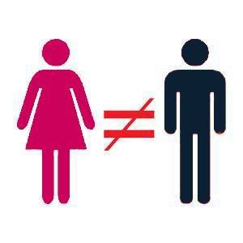

Mr. Luthra is an author and artist who writes about news, fitness, culture, and anything else that meets his interests. If you like his style, visit The Straightforward Voice, where you can find more FREE content.


An eleven year old boy named Tysen Benz of Marquette, Michigan, hanged himself on March 14, after seeing an online prank from his thirteen year old girlfriend. He died after three weeks of life support at the University of Michigan Hospital in Ann Arbor. Many attended his funeral and classmates were left heartbroken.

Katrina Goss, Benz’s mother, said that the girl faked her death on social media with the help of some friends. She claimed that the girl manipulated her son with this sick twisted prank.
The girl remains anonymous from the public due to being a minor and is being charged by police for telecommunications fraud and malicious use of a computer.
Tysen Benz was described as an athlete, comedian, friend, brother and well loved child. He played soccer, hockey and golf. Everyone in the neighborhood liked him as he had an air of likability.
He was the the middle child of three brothers and life seemed to be going well for him until he met her.
Somehow Benz got himself a phone, even though his mother said “I would never buy my kids phones.” That’s a little strange, but regardless Tysen came into contact with this 13 year old girl as they attended the same school.
Benz mother did not approve of him seeing an older girl. She requested the girl to stop contacting him several times, and even contacted her parents. “She was mean to him, controlled him, and took advantage of him, even after I repeatedly told her to leave him alone,” Goss said. “I even messaged the parent and aunt to no avail,”
The girl allegedly had a prank text message sent to Tysen leading him to believe that she committed suicide with the help of her friends. That same day, Benz’s mother found him hanging by his neck in his room after receiving the prank.
Avery Mitchell, a friend of the manipulative girl, said she did it to find out if Tysen “really loved her and he took it the wrong way.” “She didn’t mean to hurt him, because they loved each other.” Tysen posted he was going to kill himself after seeing the hoax, but nobody told an adult. All of the girl’s friends who were in on it never bothered to inform the boy’s mother or anyone’s parents.

Imagine now if it were the other way around—a 13-year-old boy fakes his death online causing his 11-year-old girlfriend to commit suicide. There would be an earthquake of uproars from everyone, especially women. Media would name the boy, list family members along with their age, income, address, and shoe size. In other words, they wouldn’t be as lenient as they are with this unnamed girl.
This goes to show you how cruel girls can be even at such a young age. Girls are always playing mind games and testing you. Is it any wonder why ancient wisdom cautions young men to be careful with the company of women?

This is yet another case where social media is off the hook. Every time a crime or similar incident occurs, social media never gets any heat always being immune from liability. When people are putting such things online, they should be more proactive with prevention and should notify or at least assist police with investigations.
The social platform the girl used is not mentioned, again another example of cover up. Full disclosure of the boy and family is given, yet nothing on the girl or whether she used Facebook or another platform. Gross did report however, that Benz used Snapchat a lot.
Why do minors need to be on social media anyway? When I was growing up, we played outside. We got together by knocking on each others doors, the old fashion way. The only technology we used later were phones. Then the internet came, and everything went downhill from there.
There’s no reason for kids to be on social media or even the internet for that matter. What are they getting that they can’t in the real world?
Benz’s mother feels it’s foolish to buy phones for kids and parents must be more firm with regulating their children’s online activity stating it is not an invasion of privacy. Mark Zuckerberg, owner of Facebook, announced plans of using AI for suicide prevention, but it smells fishy. It looks it’s an excuse to extract more info form their users the easy way for funneling it to the big brother government.
Apparently, not much. The prosecutor, Matt Wiese, told news media that they were unable to provide further information, but the Marquette police department are charging the girl with malicious use of telecommunication services and using a computer to commit a crime.
However, these are misdemeanor charges, so the maximum she could get is around a year of juvenile detention. Goss feels there should be stronger charges as she claims it was a purposeful calculated act. However, the prosecutor said such charges wouldn’t “fit the facts.”

Let’s be clear—this is a very sad incident that could have been prevented if the girl’s friends and parents took responsibility.
There are some lessons to be learned from this, the biggest being to protect your kids from social media and executing more proactive care of whom they associate with. It is unacceptable for kid, male or female to run around like a dog without a leash bullying others and using technology to manipulate younger kids.
Let the media society preach diversity and equality all they want, the fact is their kids do not interact with everyone. They don’t live what they preach.
Benz’s mother is now focused on spreading the message of social media dangers. She hopes her son’s example will cause parents to take more responsibility in their children’s digital activity.
Read More: Is Rosie Batty Using Her Child’s Death For Her Own Fame And Fortune?